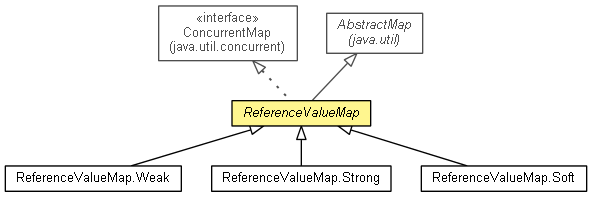

org.eclipse.net4j.util.ref
Class ReferenceValueMap<K,V>
java.lang.Object
 java.util.AbstractMap<K,V>
org.eclipse.net4j.util.ref.ReferenceValueMap<K,V>
java.util.AbstractMap<K,V>
org.eclipse.net4j.util.ref.ReferenceValueMap<K,V>
- All Implemented Interfaces:
- ConcurrentMap<K,V>, Map<K,V>
- Direct Known Subclasses:
- ReferenceValueMap.Soft, ReferenceValueMap.Strong, ReferenceValueMap.Weak
- public abstract class ReferenceValueMap<K,V>
- extends AbstractMap<K,V>
- implements ConcurrentMap<K,V>

A ConcurrentMap implementation that uses KeyedReference instances (KeyedStrongReference,
KeyedSoftReference, KeyedWeakReference or KeyedPhantomReference) as its values.
A ReferenceValueMap can be used to cache mappings until the value of the mapping is no longer
reachable from outside of the map
Note: This map is not synchronized. If it is to be used by multiple threads concurrently the user is
responsible for applying proper external synchronization!
| Nested classes/interfaces inherited from interface java.util.Map |
Map.Entry<K,V> |
|
Method Summary |
void |
clear()
|
boolean |
containsKey(Object key)
|
boolean |
containsValue(Object value)
|
protected ReferenceQueue<V> |
createQueue()
|
protected abstract KeyedReference<K,V> |
createReference(K key,
V value,
ReferenceQueue<V> queue)
|
protected V |
dereference(KeyedReference<K,V> ref)
|
Set<Map.Entry<K,V>> |
entrySet()
|
V |
get(Object key)
|
boolean |
isEmpty()
|
protected void |
purged(K key)
|
protected void |
purgeQueue()
|
V |
put(K key,
V value)
|
V |
putIfAbsent(K key,
V value)
|
V |
remove(Object key)
|
boolean |
remove(Object key,
Object value)
|
V |
replace(K key,
V value)
|
boolean |
replace(K key,
V oldValue,
V newValue)
|
int |
size()
|
ReferenceValueMap
public ReferenceValueMap()
ReferenceValueMap
public ReferenceValueMap(ConcurrentMap<K,KeyedReference<K,V>> map)
size
public int size()
- Specified by:
size in interface Map<K,V>- Overrides:
size in class AbstractMap<K,V>
isEmpty
public boolean isEmpty()
- Specified by:
isEmpty in interface Map<K,V>- Overrides:
isEmpty in class AbstractMap<K,V>
containsKey
public boolean containsKey(Object key)
- Specified by:
containsKey in interface Map<K,V>- Overrides:
containsKey in class AbstractMap<K,V>
containsValue
public boolean containsValue(Object value)
- Specified by:
containsValue in interface Map<K,V>- Overrides:
containsValue in class AbstractMap<K,V>
get
public V get(Object key)
- Specified by:
get in interface Map<K,V>- Overrides:
get in class AbstractMap<K,V>
put
public V put(K key,
V value)
- Specified by:
put in interface Map<K,V>- Overrides:
put in class AbstractMap<K,V>
putIfAbsent
public V putIfAbsent(K key,
V value)
- Specified by:
putIfAbsent in interface ConcurrentMap<K,V>
replace
public V replace(K key,
V value)
- Specified by:
replace in interface ConcurrentMap<K,V>
replace
public boolean replace(K key,
V oldValue,
V newValue)
- Specified by:
replace in interface ConcurrentMap<K,V>
remove
public V remove(Object key)
- Specified by:
remove in interface Map<K,V>- Overrides:
remove in class AbstractMap<K,V>
remove
public boolean remove(Object key,
Object value)
- Specified by:
remove in interface ConcurrentMap<K,V>
clear
public void clear()
- Specified by:
clear in interface Map<K,V>- Overrides:
clear in class AbstractMap<K,V>
entrySet
public Set<Map.Entry<K,V>> entrySet()
- Specified by:
entrySet in interface Map<K,V>- Specified by:
entrySet in class AbstractMap<K,V>
createQueue
protected ReferenceQueue<V> createQueue()
purgeQueue
protected void purgeQueue()
purged
protected void purged(K key)
dereference
protected V dereference(KeyedReference<K,V> ref)
createReference
protected abstract KeyedReference<K,V> createReference(K key,
V value,
ReferenceQueue<V> queue)
Copyright (c) 2004 - 2012 Eike Stepper (Berlin, Germany) and others.